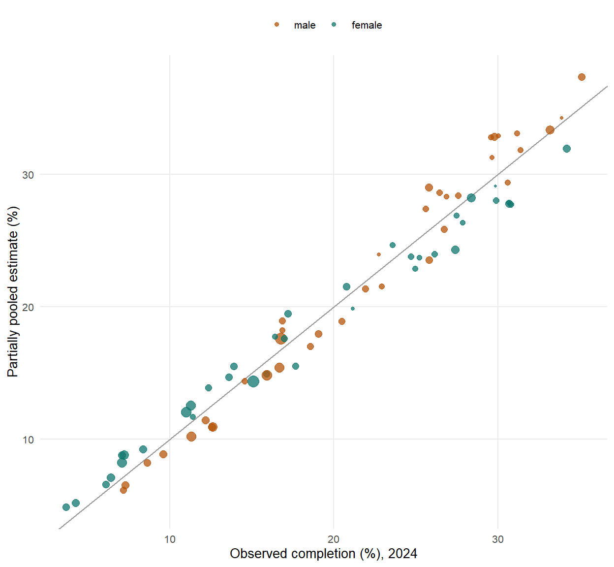

One predictor, one cluster: Nigeria’s gender gap in secondary completion is 3.7 points, and the states do not average
This post is a hierarchical Bayesian model with one predictor and one cluster. That is the floor of what counts as multilevel work, and it still took four attempts to get a posterior worth reporting. That is the interesting part.
The substantive question: how much less likely are Nigerian women than Nigerian men to have finished secondary school? The 2024 Demographic and Health Survey says 16.4% against 19.8%, a gap of 3.5 percentage points. Averaging the states instead of the population gives 3.2 points. Either way the single number describes the country and almost none of its states — the state gaps run from 8.6 points against girls to 1.6 points in their favour, and girls are ahead in five of the 37.
The model below reports the national gap with a posterior and shows how much a state’s own number is worth. It does not report a gap per state, and the last section explains why — including the four fits that failed on the way there.
What this data is not
I wanted WAEC or JAMB scores by gender and state. Those do not exist in machine-readable form. WAEC publishes annual statistics as image-based PDFs, and the National Bureau of Statistics’ WAEC report covering 2019–2021 has an appendix of scanned tables that would need OCR to use. Reconstructing exam scores from press summaries would put numbers in a chart that no reader could check.
So this is the honest substitute, and it is still a real Nigerian education outcome measured by a real survey: completed secondary education, by state and sex, from four Nigeria Demographic and Health Surveys, downloaded from the DHS REST API. Every estimate arrives with a weighted denominator, which is what a binomial likelihood needs.
Attainment is not exam performance — a state can have plenty of school-leavers and poor results. The structure of the question is the same, and these numbers can be audited. That matters more than matching the acronym.
Setup
Getting the data
Two percentages per sex — completed secondary — plus the weighted number of people each percentage is computed from. breakdown = "subnational" returns the 36 states plus the FCT, nested inside the six geopolitical zones.
The chunk caches to a CSV beside this post. The first render downloads; later renders read the snapshot, so an upstream edit to the API cannot silently move the published numbers.
Code
csv_path <- "dhs_ng_secondary_completion.csv"
if (!file.exists(csv_path)) {
ids <- "ED_EDAT_W_CSC,ED_EDAT_M_CSC,ED_EDAT_W_NUM,ED_EDAT_M_NUM"
request("https://api.dhsprogram.com/rest/dhs/data") |>
req_url_query(countryIds = "NG", indicatorIds = ids,
breakdown = "subnational", f = "json", perpage = 5000) |>
req_perform() |>
resp_body_json(simplifyVector = TRUE) |>
_[["Data"]] |>
as_tibble() |>
# State rows are prefixed ".."; zone and national rows are not.
filter(substr(CharacteristicLabel, 1, 2) == "..") |>
mutate(state = substr(CharacteristicLabel, 3, nchar(CharacteristicLabel))) |>
select(survey = SurveyId, year = SurveyYear, state,
indicator = IndicatorId, value = Value, n = DenominatorWeighted) |>
mutate(value = as.numeric(value), n = as.numeric(n)) |>
write.csv(csv_path, row.names = FALSE)
}
d <- read.csv(csv_path) |>
pivot_wider(names_from = indicator, values_from = c(value, n)) |>
transmute(
survey, year, state,
# Rebuild binomial successes and trials from the weighted percentage and
# denominator. An approximation, but a defensible one — see the limits.
done_w = round(value_ED_EDAT_W_CSC / 100 * n_ED_EDAT_W_CSC),
total_w = n_ED_EDAT_W_CSC,
done_m = round(value_ED_EDAT_M_CSC / 100 * n_ED_EDAT_M_CSC),
total_m = n_ED_EDAT_M_CSC
) |>
pivot_longer(
cols = c(done_w, done_m, total_w, total_m),
names_to = c(".value", "sex"),
names_pattern = "(.*)_(w|m)"
) |>
mutate(
sex = factor(ifelse(sex == "w", "female", "male"), levels = c("male", "female")),
state = factor(state),
year = factor(year)
)
nrow(d)[1] 296Code
| year | states |
|---|---|
| 2013 | 37 |
| 2015 | 37 |
| 2018 | 37 |
| 2024 | 37 |
Four waves are in the snapshot. The model uses only the 2024 one, for a reason that the failures below make concrete: adding the other three as a second cluster is where this stopped sampling cleanly.
The gap, before any modelling
Code
d |>
group_by(year, sex) |>
summarise(p = weighted.mean(done / total, total), .groups = "drop") |>
pivot_wider(names_from = sex, values_from = p) |>
mutate(gap_pp = 100 * (female - male)) |>
knitr::kable(digits = 1,
caption = "Population-weighted completion of secondary school, share of people age 6+.")| year | male | female | gap_pp |
|---|---|---|---|
| 2013 | 0.2 | 0.1 | -4.6 |
| 2015 | 0.1 | 0.1 | -3.6 |
| 2018 | 0.2 | 0.2 | -3.4 |
| 2024 | 0.2 | 0.2 | -3.5 |
Code
d24_raw <- d |> filter(year == "2024")
d24_raw |>
mutate(pct = 100 * done / total) |>
select(state, sex, pct) |>
pivot_wider(names_from = sex, values_from = pct) |>
mutate(gap = female - male) |>
summarise(
states = n(),
smallest_gap = min(gap),
median_gap = median(gap),
largest_gap = max(gap),
states_girls_ahead = sum(gap > 0)
) |>
knitr::kable(digits = 1,
caption = "Raw female-minus-male gap in secondary completion across states, 2024, percentage points.")| states | smallest_gap | median_gap | largest_gap | states_girls_ahead |
|---|---|---|---|---|
| 37 | -8.6 | -3.2 | 1.6 | 5 |
A 3.5-point national gap, a median state gap of about 3, an extreme of 8.6 against girls, and five states pointing the other way. That spread is what justifies a cluster term rather than one intercept.
The model
\[ \text{done}_i \sim \text{Binomial}(n_i, p_i), \qquad \log\!\left(\frac{p_i}{1-p_i}\right) = \alpha + \beta\,\text{female}_i + u_{\text{state}[i]}, \qquad u \sim N(0, \tau) \]
One predictor, sex, as a fixed effect. One cluster, state, entering as a varying intercept with unknown scale τ. The likelihood is binomial, using the weighted denominators the DHS publishes. That is the entire model — no age, no urban/rural, no zone, no interactions.
τ is what makes this Bayesian multilevel rather than 37 separate fits: it is a parameter that says how much states differ, and it is estimated from the data while simultaneously determining how hard each state is pulled toward the national mean.
Code
fit_hier <- stan_glmer(
cbind(done, total - done) ~ sex + (1 | state),
data = d24_raw, family = binomial,
prior = normal(0, 1.5), prior_intercept = normal(-1.5, 1.5),
chains = 4, iter = 6000, cores = 4, seed = 20261102, refresh = 0,
adapt_delta = 0.99
)Checking the sampler before reading the answer
This is the step that decided the shape of the whole post, so it goes before any estimate. R-hat near 1 means the four chains agree; effective sample size is how many independent draws the autocorrelated ones are worth; divergent transitions mean the sampler hit a region of parameter space it could not explore, which silently biases everything downstream.
Code
diag <- summary(fit_hier)
checks <- tibble(
max_rhat = max(diag[, "Rhat"], na.rm = TRUE),
min_n_eff = min(diag[, "n_eff"], na.rm = TRUE),
divergent = rstan::get_num_divergent(fit_hier$stanfit),
max_td = rstan::get_num_max_treedepth(fit_hier$stanfit)
)
# The caption is generated from the values rather than written by hand, so it
# cannot drift out of agreement with the fit.
checks |>
knitr::kable(
digits = 3,
caption = sprintf(
"Convergence checks for the reported model: maximum R-hat %.3f, minimum effective sample size %d, %d divergent transitions, %d treedepth saturations.",
checks$max_rhat, round(checks$min_n_eff), checks$divergent, checks$max_td
)
)| max_rhat | min_n_eff | divergent | max_td |
|---|---|---|---|
| 1.013 | 391 | 0 | 0 |
Code
tibble(
term = names(fixef(fit_pooled)),
no_pooling = fixef(fit_pooled),
pooled_lo = fixef(fit_pooled) - 1.96 * se(fit_pooled),
pooled_hi = fixef(fit_pooled) + 1.96 * se(fit_pooled),
partial_pooling = fixef(fit_hier)
) |>
knitr::kable(digits = 2,
caption = "Fixed effects on the log-odds scale. The sex coefficient is the national average gap; negative means men ahead.")| term | no_pooling | pooled_lo | pooled_hi | partial_pooling |
|---|---|---|---|---|
| (Intercept) | -1.40 | -1.41 | -1.38 | -1.36 |
| sexfemale | -0.23 | -0.26 | -0.21 | -0.24 |
The sex coefficient barely moves between the two fits, which is the expected outcome rather than a null result. A hierarchy’s job is not to change the national coefficient — it is to change what can be said about each state, which is the next section.
What partial pooling actually does
Code
newdata <- expand_grid(
state = levels(d24_raw$state),
sex = factor(c("male", "female"), levels = levels(d24_raw$sex))
)
epred <- posterior_epred(fit_hier, newdata = newdata)
modelled <- tibble(
state = levels(d24_raw$state),
male = 100 * colMeans(epred[, newdata$sex == "male"]),
female = 100 * colMeans(epred[, newdata$sex == "female"])
)
shrink <- modelled |>
pivot_longer(c(male, female), names_to = "sex", values_to = "modelled_pct") |>
mutate(sex = factor(sex, levels = levels(d24_raw$sex))) |>
left_join(
d24_raw |> mutate(observed_pct = 100 * done / total) |>
select(state, sex, observed_pct, total),
by = c("state", "sex")
) |>
mutate(shift = modelled_pct - observed_pct)
shrink |>
summarise(
correlation = cor(observed_pct, modelled_pct),
mean_abs_shift_pp = mean(abs(shift)),
largest_shift_pp = max(abs(shift)),
shift_vs_n_cor = cor(abs(shift), total)
) |>
knitr::kable(digits = 3,
caption = "Observed against partially pooled completion rates, 2024. The last column is the correlation between how far a state moved and how much data it has — negative is the behaviour you want.")| correlation | mean_abs_shift_pp | largest_shift_pp | shift_vs_n_cor |
|---|---|---|---|
| 0.983 | 1.409 | 3.184 | -0.162 |
Code
shrink |>
ggplot(aes(x = observed_pct, y = modelled_pct, colour = sex)) +
geom_abline(slope = 1, intercept = 0, colour = "grey60", linewidth = 0.4) +
geom_point(aes(size = total), alpha = 0.75) +
scale_colour_manual(values = c(male = "#b45309", female = "#0f766e")) +
scale_size_continuous(range = c(0.8, 4), guide = "none") +
labs(x = "Observed completion (%), 2024",
y = "Partially pooled estimate (%)",
colour = NULL) +
theme_minimal(base_size = 10) +
theme(panel.grid.minor = element_blank(),
legend.position = "top")
The estimates track the observations closely — the correlation is above 0.98 — which is what you expect when there are 37 clusters and a single predictor competing with them. Shrinkage here is modest, not dramatic, and claiming otherwise would be the kind of thing a plot can be made to say.
The gap I could not estimate per state
The obvious next question is which states favour girls, with uncertainty. That needs the sex effect to vary by state, which means a random slope. I tried three versions and am reporting none of them:
| Parameterisation | What happened |
|---|---|
(1 + sex \| state) + (1 \| year) |
R-hat never fell below 1.05 |
(1 \| state) + (0 + female01 \| state) + (1 \| year) |
R-hat fine, 8 divergent transitions, 438 s |
(1 \| state) + (1 \| cell), cell = state × sex |
16 divergences; the cell term contains state, so neither intercept was identified — one state’s gap swung from −1.0 observed to −7.3 modelled |
(1 \| cell) alone, all four waves |
R-hat 1.12, minimum effective sample size 32, “chains did not converge” |
Every one of these is the same problem in different clothes. A random slope on a binary predictor asks the sampler to estimate how much gaps vary across 37 clusters that each contribute two numbers. That variance component is weakly identified, and a weakly identified variance component produces exactly the symptoms above: divergences, funnels, and a posterior that looks fine until you read the diagnostics.
The model that does work is the one without the slope. It answers a narrower question — the national gap, with state levels pooled — and it is the only one of the five whose numbers are worth reading. The per-state gap is not unavailable because the model is inconvenient; it is unavailable because two numbers per state cannot separate a real state difference from sampling noise, and adding a prior does not manufacture the information.
What this does not show
- Attainment is not exam performance. Completed secondary education says nothing about grades. The WAEC/JAMB question needs data this post could not obtain honestly.
- One predictor is one predictor. States differ in wealth, urbanisation and school supply, none of which is in the model. The state term absorbs all of it, so it means everything about that state, measured and unmeasured — not a policy effect.
-
The counts are reconstructed.
round(pct/100 * n)rebuilds binomial trials from weighted percentages and denominators. Defensible, but not the original microdata; the unit-record files would be the next step and require DHS registration. - One wave. 2024 only, and the reason is in the table above rather than a preference.
Reproducing this
The data snapshot is committed alongside this post, so the numbers are stable. To re-download from the API instead of replaying the cache, delete dhs_ng_secondary_completion.csv and re-render.
quarto render posts/hierarchical-education-gender-gap/index.qmd --no-freeze